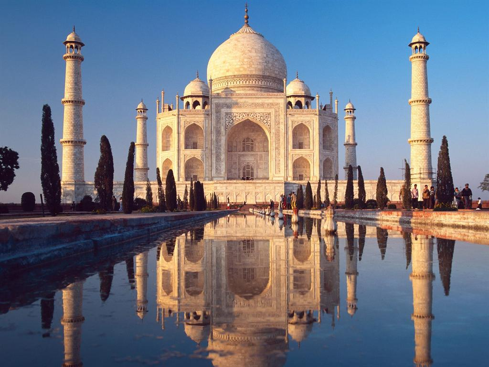
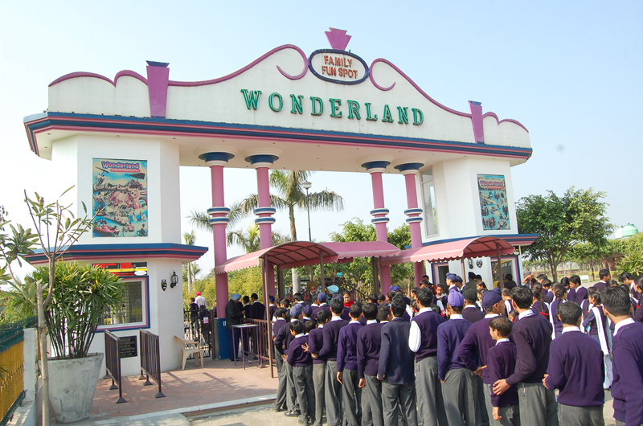

Un voyage en Inde
Écrit par Manzanax_x - le 17.07.2014 à 20h03
En juin, j’ai eu l’occasion de visiter ce merveilleux pays qu’est l’Inde. En un mois, mes amis et moi avons pu découvrir les différentes villes qui
constituent ce pays immense.
12 juin - 15 juin
Nous avons commencé par l’immanquable Taj Mahal. Un monument immense pour une preuve d’amour étonnante. On ne peut que rester
bouche bée lorsque l’on se retrouve devant l’une des sept merveilles du monde. Je n’ai pas grand chose de négatif à dire, j’ai vraiment
adoré découvrir le Taj Mahal et son histoire. Toutefois, il faut tout de même admettre qu’il ne faut pas avoir la bourse légère pour pouvoir
visiter le Palais.

15 juin - 16 juin
Il nous a fallu quatre heures de voiture pour arriver à notre prochaine escale : Wonderland Amusement Park. Un parc d’attraction, rien que
ça. Outre le fait que l’on devait être le seul groupe d’occidentaux du parc, on s’est plutôt bien amusés. Les attractions étaient
divertissantes et rafraîchissantes mais il ne fallait pas oublier de se baigner habillé : pudeur indienne oblige.

Commentaires
Nello
OMG. That's amazing !
GroggySoul
Cool story bro.